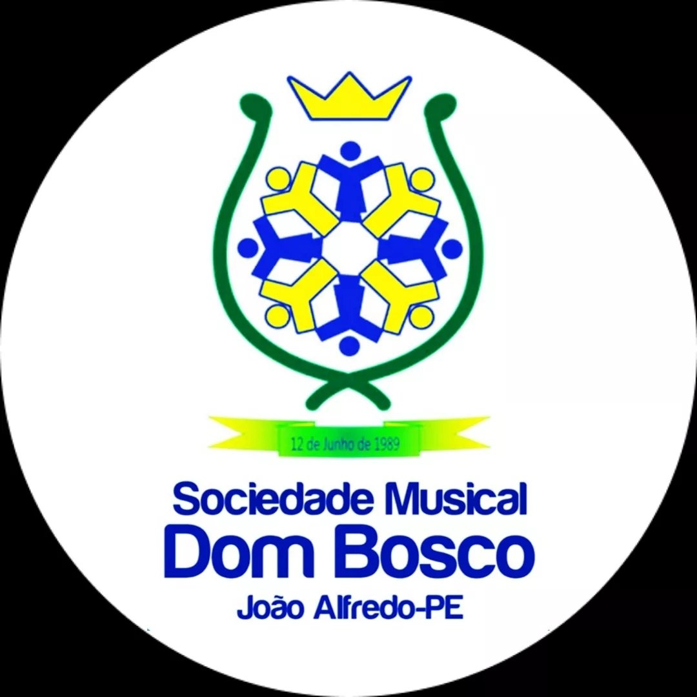
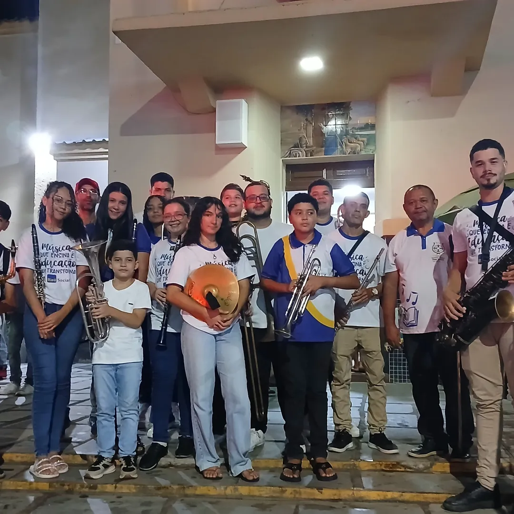

Instrumentos de sopro
Aprendizado musical e prática de instrumentos de sopro.

SOCIEDADE DOM BOSCO
Educação, cultura e música como instrumentos de desenvolvimento e transformação.
Conheça o projeto
SOBRE O PROJETO
A Sociedade Dom Bosco desenvolve um trabalho voltado para a educação, cultura e formação através da música.
Por meio das aulas e atividades musicais, o projeto busca proporcionar novas oportunidades de aprendizado, convivência e desenvolvimento.
A música é utilizada como ferramenta de educação, disciplina, criatividade e integração social.
NOSSA HISTÓRIA
A Sociedade Dom Bosco surgiu com o propósito de contribuir para a formação de crianças, jovens e comunidade por meio de atividades educativas e culturais.
Ao longo de sua trajetória, a música tornou-se uma importante ferramenta dentro desse trabalho, criando oportunidades para o aprendizado musical e para o desenvolvimento de novos talentos.
Hoje, o projeto continua buscando levar conhecimento, cultura e novas experiências para seus participantes.
APRENDA MÚSICA
Confira as atividades oferecidas pelo projeto.
Aprendizado musical e prática de instrumentos de sopro.
Desenvolvimento de ritmo, coordenação e prática musical.
Conhecimentos básicos de música, leitura e percepção musical.
HORÁRIOS
* Os horários podem ser alterados conforme a programação da Sociedade Dom Bosco.
ONDE ESTAMOS
As atividades são realizadas na sede da Sociedade Dom Bosco.
Rua / número / bairro
Cidade — Estado
Localização
MUITO MAIS QUE MÚSICA
Desenvolvimento de responsabilidade, concentração e dedicação.
Contato com a música e valorização da cultura.
Aprendizado coletivo e fortalecimento dos vínculos entre participantes.
Estímulo à criatividade, coordenação e expressão.
FAÇA PARTE
Entre em contato com a Sociedade Dom Bosco para saber mais sobre as aulas e inscrições.
Entrar em contato